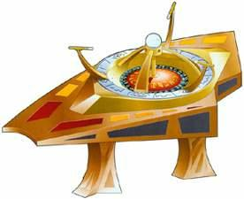

Dabo |
|
||
|  |
Gioco d'azzardo che utilizza un disco rotante, simile alla
roulette terrestre.
Il dabo è un'attrazione del bar di Quark sulla
Passeggiata di Deep Space Nine
(Emissary).
«Doppio basso» e «triplo alto» sono due delle varie scommesse che
è possibile effettuare durante una partita. Un possibile risultato
è «passo cinque» (Starship Down).